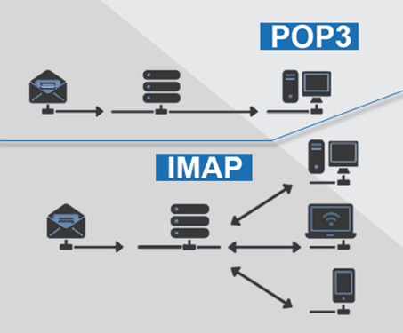

Сравнение на POP3 и IMAP
Когато искате да четете имейл от помощта си, използвайки приложение (или през браузър) на смартфон, таблет, лаптоп или персонален компютър, такива приложения за обработка на имейли обикновено комуникират с главния имейл сървър, използвайки един от двата протокола – POP3 или IMAP. POP3 е малко по-стар, но IMAP в повечето случаи е по-добър избор, защото осигурява по-добра, по-интуитивна синхронизация. IMAP се използва за изтегляне, четене и управление на имейли, докато POP3 се използва само за изтегляне на имейли. IMAP е по-нов и по-популярен от POP3, особено когато множество клиенти имат достъп до един и същ акаунт.
Съдържание
| POP3 | IMAP | |
|---|---|---|
| Бързина | Бърз | Бавен |
| Съхранение на съдържанието | Изтегля на устройство и изтрива от сървъра, освен ако не е избрано „запазване на копие на сървъра“ | Винаги на сървъра |
| Синхронизиране на поща | Не | Да |
| Посока | Еднопосочно промените направени на устройството, нямат ефект върху съдържанието на сървъра | Двупосочен каквито и промени да направите на сървъра или устройството, другата страна също показва промените |
| Използваемост без интернет връзка | Пощата могат да се четат когато нямате връска с интернет, след като бъдат изтеглени, устройството трябва само да има достъп до интернет, за да изтегли имейлите | Изтеглените имейли могат да бъдат четени или изтривани, и когато нямате връска с интернет. Промените, направени на устройството, се синхронизират със сървъра, когато устройството има достъп до интернет |
| Порт(използван от сървъра) | POP3 слуша на 110 и POP със SSL(POP3DS) слуша на 995 порт | IMAP слуша на 143 и IMAP със SSL(IMAPDS) слуша на 993 порт |
| Съхраняване на съобщенията на сървъра | По подразбиране не съхранява, но има възможност да се настрои | Задължително |
| Версии | POP (POP1), POP2, POP3, POP4 (предложено) | IMAP, IMAP2, IMAP3 (никога не се приема), IMAP2bis (преименуван на IMAP4) |
Множество срещу единично логиране в един и същ акаунт
IMAP позволява едновременен достъп и манипулиране на имейли от множество клиенти, като редакциите и промените, направени от един клиент, се показват на живо за всички други едновременно свързани клиенти. POP позволява само един клиент да бъде свързан към сървъра.
Информация за състоянието на съобщението
IMAP позволява състоянието на съобщението прочетено, непрочетено, отговорено, препратено или изтрито да бъде показано на сървъра, което улеснява достъпа на множество потребители до тази информация, докато POP няма такава функционалност.
Балансиране на ползи срещу разходи
IMAP е по-сложен и консумира голямо количество сървърни ресурси, когато извършвате търсене от страна на сървъра в големи пощенски кутии. POP3 не консумира голямо количество сървърни ресурси тъй като след сваляне на пощата тя се изтрива от сървъра.
Недостатъци
POP и IMAP са само клиенти за имейл. Те не поддържат синхронизиране на друга свързана информация като контакти, срещи, бележки и задачи.